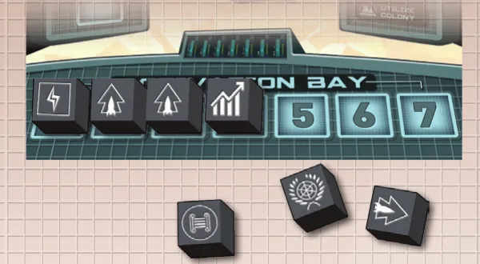
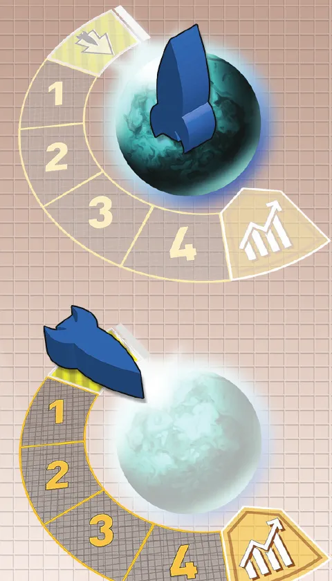
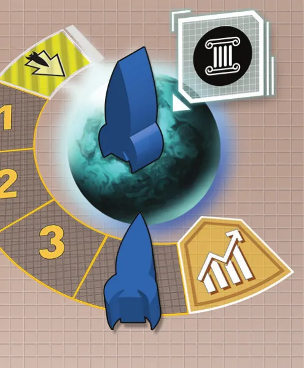
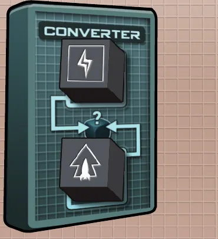
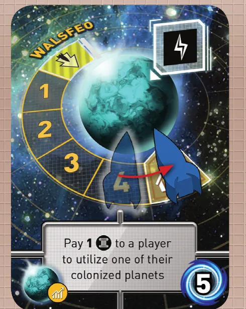
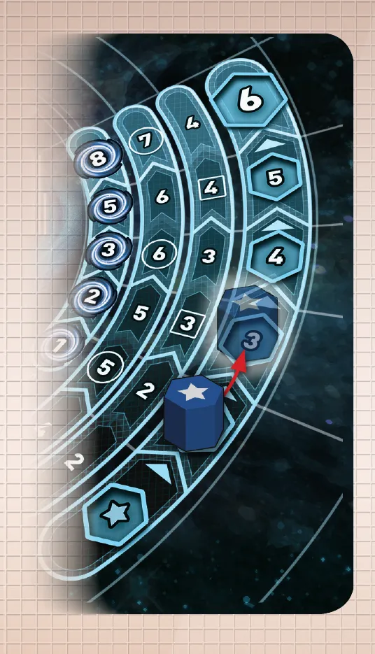

A mesa montada para 3 jogadores: o Painel de Controle e os 7 Dados de Ação no centro, 5 planetas disponíveis ao lado da pilha de Cartas de Planeta e, em cada Painel Galáctico, 2 Naves no centro, 2 na trilha de Naves, os marcadores de recursos, o Marcador de Império na estrela e a Missão Secreta embaixo. Ilustração: manual Meeple BR p. 3Rolagem de dados · Ficção científica
Como jogar Tiny Epic Galaxies
Para quem nunca jogou1 a 5 jogadores30 a 60 min14+Edição Meeple BR
· Redação Elite Boardgamers
Resumo em 1 minuto
Você rola Dados de Ação para mover Naves, juntar Energia e Cultura e colonizar planetas, e vence quem tiver mais pontos de vitória depois que alguém chega a 21.
No seu turno, você rola os dados do seu Nível de Império e usa cada símbolo como uma ação, na ordem que quiser.
Quem leva uma Nave ao fim da trilha de colonização fica com o planeta e os pontos dele; as outras Naves da carta voltam para casa.
Os outros jogadores podem pagar 1 Cultura para seguir cada ação sua, e a partida acaba quando a rodada se completa depois que alguém chega a 21 pontos.
Como você aprende: 4 etapas, da mesa montada à contagem de pontosLeitura do essencial: cerca de 10 min
À vista, só o essencial para jogar. O que abre com + é explicação, exemplo, exercício ou regra de caso especial: abra quando precisar.
Comece a jogar em 4 minutos
A mesa montada para 3 jogadores: o Painel de Controle e os 7 Dados de Ação no centro, 5 planetas disponíveis ao lado da pilha de Cartas de Planeta e, em cada Painel Galáctico, 2 Naves no centro, 2 na trilha de Naves, os marcadores de recursos, o Marcador de Império na estrela e a Missão Secreta embaixo. Ilustração: manual Meeple BR p. 3
Meta: em 4 minutos de leitura, montar a mesa e jogar o seu primeiro turno sem abrir o manual.
A ideia do jogo
Cada jogador comanda um império galáctico. No seu turno, você rola Dados de Ação e usa os símbolos para mover Naves, juntar recursos e colonizar os planetas abertos no centro da mesa. Cada planeta colonizado e cada aumento do Nível de Império dão pontos de vitória; quando alguém chega a 21, a partida caminha para o fim p. 2 e 4.
Monte a mesa
Na ordem. O marcado (depois) se monta já e se usa mais tarde.
Cada jogador pega um Painel Galáctico e, da mesma cor, 4 Naves, 1 Marcador de Cultura, 1 Marcador de Energia e 1 Marcador de Império. O verso do painel é da partida solo (depois).
2 Naves de pé no centro do painel; as outras 2 nos espaços da trilha de Naves (depois).
Na trilha de recursos, marque 1 Cultura e 2 Energias.
Marcador de Império no primeiro espaço da trilha de Império, o da estrela.
Abra no centro da mesa Cartas de Planeta em número igual ao de jogadores mais 2; com 5 jogadores, só 6. São os planetas disponíveis.
Painel de Controle e os 7 Dados de Ação no centro.
Cada jogador recebe 2 Cartas de Missão Secreta, fica com 1, escondida embaixo do painel, e descarta a outra (depois).
Tudo isso está na p. 3. O jogador mais novo começa, e a vez segue no sentido horário p. 4 e 9.
Seu primeiro turno
Role 4 dados. Use-os um de cada vez, na ordem que quiser, e pare quando quiser. Para usar um dado, ponha-o na Área de Ativação do Painel de Controle e faça a ação do símbolo; ele fica lá até o fim do turno p. 4.
Símbolo
Ação
Mover Nave
Uma Nave do painel vai a um planeta: pousa (de pé; pode fazer na hora a ação da carta) ou orbita (deitada no primeiro espaço da trilha de colonização) p. 5
Energia
1 Energia por Nave no painel e por Nave em planeta de Energia p. 6
Cultura
1 Cultura por Nave em planeta de Cultura p. 6
Diplomacia ou Economia
Uma Nave sua em órbita anda 1 espaço, se a trilha termina nesse símbolo p. 7
Utilize uma Colônia
Suba 1 Nível de Império pagando 2 de um só recurso p. 8
Rerrolar: a qualquer momento, rerrole os dados não usados que quiser. A primeira vez é grátis; as outras custam 1 Energia cada p. 4.
Conversor: uma vez por turno, 2 dados não usados vão para o Conversor e um terceiro vira a face que você quiser p. 9.
Seguir: depois de cada ação, outro jogador pode pagar 1 Cultura e fazer a mesma ação com as peças dele, uma vez por dado p. 4.
Ainda não precisa saber
Colonizar um planeta e o que cada Nível de Império dá: etapa 3. Detalhes de seguir, Missões Secretas e desempate: etapa 4.
Como a partida acaba
Quando alguém chega a 21 pontos de vitória, a rodada se completa, as Missões Secretas são reveladas e vence quem tiver mais pontos p. 9.
Prefere ver? O vídeo abaixo mostra as regras. Ele complementa este guia; em caso de diferença, vale o manual.
Desregrando: Tiny Epic Galaxies, canal Desregrando · abrir no YouTube
0Antes de tudo: o que é este jogoOpcional

Quatro dados já usados na Área de Ativação do Painel de Controle e três ainda à espera, fora dela. Ilustração: manual Meeple BR p. 4Abrir esta seção
Você é um império em expansão. No centro da mesa há uma fileira de planetas recém-descobertos, e todos disputam os mesmos. Quem coloniza um planeta tira a carta da mesa, guarda embaixo do próprio Painel Galáctico e soma os pontos de vitória impressos nela p. 2 e 7.
O motor do jogo são os dados. Você não escolhe ações num cardápio: rola os Dados de Ação e trabalha com os símbolos que saírem. Três ferramentas aliviam a sorte: a rerrolagem, que custa Energia depois da primeira; o Conversor, que troca dois dados por um símbolo à escolha; e a ação de seguir, que custa Cultura e deixa você agir no turno dos outros p. 4 e 9.
Duas ideias sustentam o resto:
Crescer dá mais dados. O Nível de Império, marcado na trilha de Império do seu painel, decide quantos dados você rola e quantas Naves pode usar, e também vale pontos p. 3 e 8.
Planeta tem dono só no fim da trilha. Várias Naves de vários jogadores podem orbitar o mesmo planeta. Quem chega primeiro ao fim da trilha de colonização leva a carta, e as Naves dos outros voltam para casa p. 5 e 7.
1Como este guia ensinaOpcional

As duas formas de chegar a um planeta: em cima, a Nave pousada de pé na superfície; embaixo, a Nave deitada no primeiro espaço da trilha de colonização, que termina no símbolo de Economia. Ilustração: manual Meeple BR p. 5Abrir esta seção
O guia tem quatro etapas, cada uma uma parte real da partida: montar a mesa; rolar e usar os dados (mover, coletar, rerrolar e o Conversor); colonizar planetas e subir de Nível de Império; e seguir os outros e fechar a partida. Em cada etapa vêm a regra que se usa sempre (Passo a passo), as regras de caso especial (Regra adicional), uma explicação de por que funciona assim, um exemplo resolvido, uma tarefa para completar, uma sua vez, sem ajuda, e um treino rápido quando a regra precisa ficar automática. Cada pergunta tem opções: escolha uma, e aparecem a resposta certa e a explicação. No final, uma avaliação curta diz o que reler, e uma folha de consulta vai para a mesa.
2Etapa 1: montar a mesa
Por que funciona assimA mesa montada para 3 jogadores: o Painel de Controle e os 7 Dados de Ação no centro, 5 planetas disponíveis ao lado da pilha de Cartas de Planeta e, em cada Painel Galáctico, 2 Naves no centro, 2 na trilha de Naves, os marcadores de recursos, o Marcador de Império na estrela e a Missão Secreta embaixo. Ilustração: manual Meeple BR p. 3Regra adicional: Partida soloSobre a ediçãoPratique esta etapa: exercícios com respostas
3Etapa 2: rolar e usar os dados
Por que funciona assimQuatro dados já usados na Área de Ativação do Painel de Controle e três ainda à espera, fora dela. Ilustração: manual Meeple BR p. 4As duas formas de chegar a um planeta: em cima, a Nave pousada de pé na superfície; embaixo, a Nave deitada no primeiro espaço da trilha de colonização, que termina no símbolo de Economia. Ilustração: manual Meeple BR p. 5Regra adicional: Mesma carta, duas NavesRegra adicional: Trocar de posição no mesmo planetaRegra adicional: Onde não se vaiRegra adicional: Nave removida

Um planeta que produz Cultura com duas Naves do mesmo jogador: uma na superfície e uma na trilha de colonização. Um dado de Cultura rende 2 Culturas aqui, uma por Nave. Ilustração: manual Meeple BR p. 6Sobre a edição

O Conversor do Painel de Controle com dois dados nos seus espaços: em troca deles, um terceiro dado vira a face que o jogador escolher. Ilustração: manual Meeple BR p. 9Sobre a ediçãoVer um exemplo resolvidoPratique esta etapa: exercícios com respostas
4Etapa 3: colonizar e crescer
Por que funciona assim

Uma Carta de Planeta: o recurso que o planeta produz no alto, a trilha de colonização com a Nave dando o último passo até o símbolo do fim, a ação escrita na carta e os pontos de vitória no canto. Ilustração: manual Meeple BR p. 7

A trilha de Império: o Marcador de Império sobe do segundo para o terceiro espaço, que custa 3. As colunas à esquerda mostram os pontos de vitória, os dados e as Naves de cada nível. Ilustração: manual Meeple BR p. 8
A trilha de Império, lida nas ilustrações das p. 8 (níveis 2 a 6) e 4 (nível 1 e custo do nível 2):
Nível
Custo para chegar
Dados
Naves
Pontos de vitória
1 (estrela)
começo
4
2
0
2
2
5
2
1
3
3
5
3
2
4
4
6
3
3
5
5
6
4
5
6
6
7
4
8
Sobre a ediçãoRegra adicional: Ação de um planeta colonizadoRegra adicional: Ação de um planeta ao pousarVer um exemplo resolvidoPratique esta etapa: exercícios com respostas
5Etapa 4: seguir os outros e fechar a partida
Um planeta que produz Cultura com duas Naves do mesmo jogador: uma na superfície e uma na trilha de colonização. Um dado de Cultura rende 2 Culturas aqui, uma por Nave. Ilustração: manual Meeple BR p. 6Por que funciona assimRegra adicional: O Conversor não se segueVer um exemplo resolvidoPratique esta etapa: exercícios com respostas
6Situações especiaisOpcional
O Conversor do Painel de Controle com dois dados nos seus espaços: em troca deles, um terceiro dado vira a face que o jogador escolher. Ilustração: manual Meeple BR p. 9Abrir esta seção
A pilha de planetas. Cada planeta colonizado é reposto na hora com a carta do topo da pilha p. 7. O manual não diz o que fazer se a pilha acabar.
Recurso zerado. Gastou toda a Energia ou toda a Cultura, o marcador sai do painel e volta quando você ganhar aquele recurso p. 6.
Naves no painel. Uma Nave pode voltar de um planeta para o painel com Mover Nave, e várias Naves podem ficar lá. Lá, cada uma vale 1 Energia por dado de Energia p. 5 e 6.
Dica
Partida solo: os Piratas Galácticos. Você joga contra uma Frota de Piratas, impressa no verso de um Painel Galáctico, cada uma com uma dificuldade p. 10.
Regra adicional: Preparação soloRegra adicional: O turno dos PiratasRegra adicional: Ações dos PiratasRegra adicional: Recursos no máximo, no fim do turno pirataRegra adicional: Fim da partida solo
7Avaliação finalOpcional
Uma Carta de Planeta: o recurso que o planeta produz no alto, a trilha de colonização com a Nave dando o último passo até o símbolo do fim, a ação escrita na carta e os pontos de vitória no canto. Ilustração: manual Meeple BR p. 7Abrir esta seção
Responda sem consultar. Cada resposta diz o que reler.
1. Você está no primeiro espaço da trilha de Império. Quantos dados rola?
4p. 4. Releia a etapa 1.
2. Você tem 1 Nave no painel e 2 em planetas de Energia. Quanto rende um dado de Energia?
3: 1 do painel e 2 dos planetas p. 6. Releia a etapa 2.
3. Já houve uma rerrolagem neste turno. Você quer mais duas. Quanto paga?
2 Energias, 1 por rerrolagem depois da primeira p. 4. Releia a etapa 2.
4. Sua Nave alcança o símbolo da trilha de colonização. A Nave de Bruno estava em órbita do mesmo planeta. O que acontece com ela?
Volta para o painel de Bruno: todas as Naves da carta voltam p. 7. Releia a etapa 3.
5. Você está no nível 3 com 2 Culturas e 4 Energias. Como sobe para o 4?
4 Energias: o nível 4 custa 4, de um recurso só p. 8. Releia a etapa 3.
6. Você sobe de nível e ganha uma Nave. Quando pode usá-la?
Neste turno; só o dado novo espera o próximo p. 8. Releia a etapa 3.
7. Bruno usa o Conversor. Você pode seguir?
Não: o Conversor não pode ser seguido p. 9. Releia a etapa 4.
8. Ana começou. Carla, a terceira, chega a 21 pontos. Quem ainda joga?
Ninguém. Carla é a última da rodada; a partida acaba antes da vez de Ana p. 9. Releia a etapa 4.
8Para consultar durante a partida
A trilha de Império: o Marcador de Império sobe do segundo para o terceiro espaço, que custa 3. As colunas à esquerda mostram os pontos de vitória, os dados e as Naves de cada nível. Ilustração: manual Meeple BR p. 8
Preparação: 2 Naves no centro do painel, 2 na trilha de Naves. 1 Cultura e 2 Energias. Marcador de Império na estrela. Planetas abertos: jogadores mais 2 (com 5 jogadores, 6). Missões Secretas: receba 2, fique com 1. Começa o mais novo.
Seu turno
Role os dados do seu Nível de Império.
Use um dado de cada vez, na ordem que quiser: Área de Ativação, depois a ação. Não precisa usar todos.
Rerrolar: a primeira é grátis; as outras, 1 Energia cada.
Conversor: 2 dados viram 1 face à escolha. Uma vez por turno. Não se segue.
Fim: tire os dados do Painel de Controle e passe a vez.
Os símbolos
Mover Nave: do painel ou de um planeta para outro planeta; pousar (pode fazer a ação da carta) ou orbitar (primeiro espaço da trilha). Ou de volta para o painel.
Energia: 1 por Nave em planeta de Energia, mais 1 por Nave no painel.
Cultura: 1 por Nave em planeta de Cultura.
Diplomacia ou Economia: 1 espaço numa trilha que termina nesse símbolo. Chegou ao símbolo: colonizou; todas as Naves da carta voltam; nova carta na mesa.
Utilize uma Colônia: ação do painel (subir de nível, custo do próximo espaço, um recurso só) ou de um planeta seu.
Limites: 7 de cada recurso. Uma Nave sua por trilha de colonização e uma por superfície.
Seguir: 1 Cultura, uma vez por dado, com as suas peças. Ordem: sentido horário a partir do jogador da vez.
Trilha de Império: custo 2, 3, 4, 5, 6. Dados 4, 5, 5, 6, 6, 7. Naves 2, 2, 3, 3, 4, 4. Pontos 0, 1, 2, 3, 5, 8. Nave nova: já; dado novo: no próximo turno.
Fim: alguém chega a 21 (sem contar a missão); a rodada se completa. Revele as missões e some. Empate: mais planetas; maior Nível de Império; mais Energia e Cultura somadas; vitória dividida.
9Fontes
A mesa montada para 3 jogadores: o Painel de Controle e os 7 Dados de Ação no centro, 5 planetas disponíveis ao lado da pilha de Cartas de Planeta e, em cada Painel Galáctico, 2 Naves no centro, 2 na trilha de Naves, os marcadores de recursos, o Marcador de Império na estrela e a Missão Secreta embaixo. Ilustração: manual Meeple BR p. 3
Não foram encontrados FAQ nem errata oficiais em português até 01/11/2026.
Regras conferidas no Manual de Regras da edição brasileira (Meeple BR Jogos, 12 páginas, tradução de Guilherme Duque, arquivo de 2017 publicado no site da editora). As páginas citadas são as desse manual.